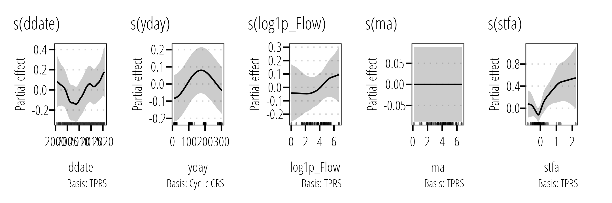
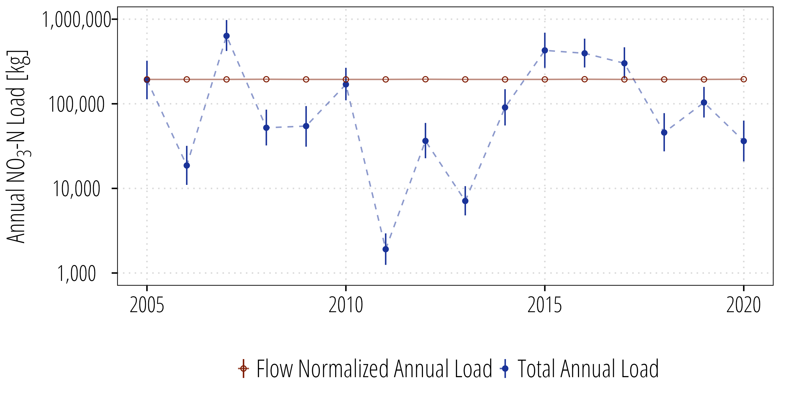
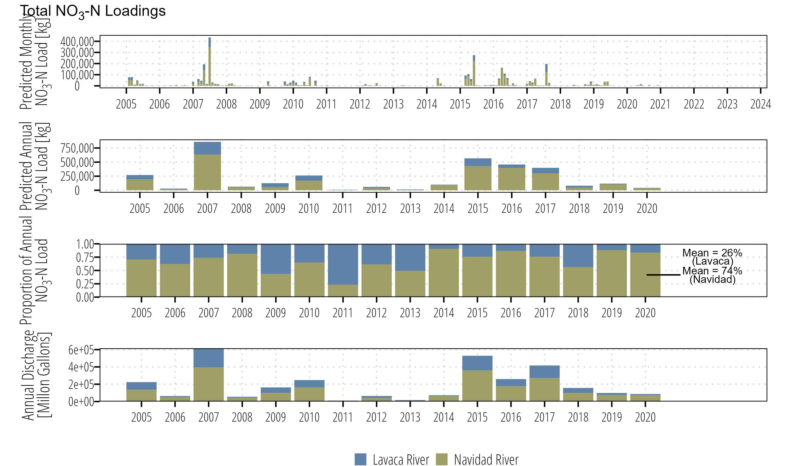
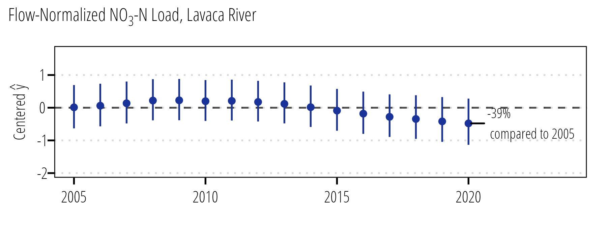
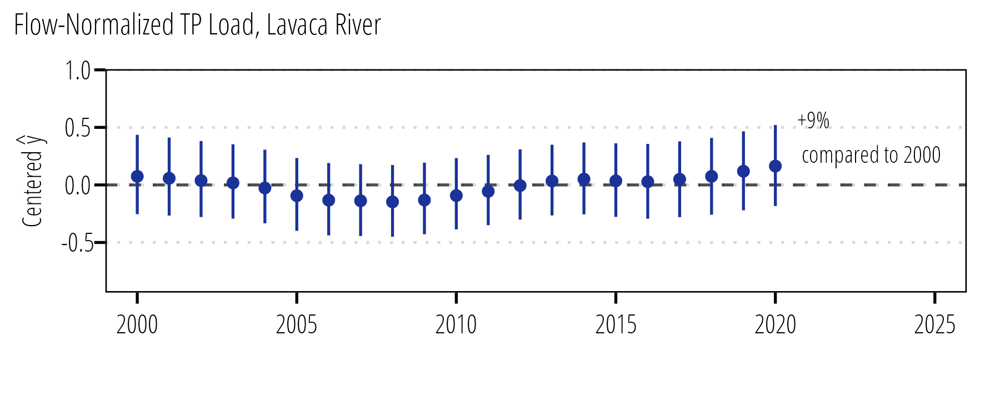

Statistical Modeling and Trends in Freshwater Derived Nutrient Loads, Lavaca Bay, Texas
2022 AWRA Annual Water Conference
Texas Water Resources Institute, Texas A&M AgriLife Research
11/8/22
Acknowledgements
Stakeholder advisory committee:
Dr. Mike Wetz - Harte Intitute, TAMU-CC
Bill Balboa - Matagorda Bay Foundation
Janet Weaver - Lavaca Bay Foundation
Chad Kinsfather - Lavaca-Navidad River Authority
Brian Koch - Texas State Soil and Water Conservation Board
Jason Pinchback - Texas General Land Office
RJ Shelly - Texas Sea Grant
Graduate Students:
Shubham Jain - Ph.D Candidate TAMU Biological and Agricultural Engineering
Funding:
Funded in part by grants from the Texas General Land Office and the National Oceanic and Atmospheric Administration.
This project was funded by a Texas Coastal Management Program grant approved by the Texas Land Commissioner, providing financial assistance under the Coastal Zone Management Act of 1972, as amended, awarded by the National Oceanic and Atmospheric Administration (NOAA), Office for Coastal Management, pursuant to NOAA Award No. NA21NOS4190136. The views expressed herein are those of the author(s) and do not necessarily reflect the views of NOAA, the U.S. Department of Commerce, or any of their subagencies.
Background
Lavaca Bay Watershed
- 3,146 miles2
- 50% Pasture and rangeland
- 20% Cultivated cropland (cotton, soy, corn, sorghum)
- 17% Forested
- 5% Suburban, urban
Background
- Bugica, Sterba-Boatwright, and Wetz (2020) identify euthrophication risk in Lavaca Bay due to ü°Ö TP and ü°Ö Chlorophyll-a concentrations.
Possible concerns for Total Phosphorus at some FW sites.
Texas does not currently have nutrient standards for streams.
Long-term quarterly monitoring, no historical storm or flow-biased data to this point.
Questions
- Can we quantify nutrient loads exported to Lavaca Bay?
- Are there trends?
- Can we identify correlations in nutrient loading and estuary water quality (controlling for discharge)?
Lavaca Bay Watersheds

- 1.3 million acre-feet per year
- 65% from Lavaca/Navidad watershed
- 61% from Navidad at Palemtto Bend Dam
- 32% from Lavaca near City of Edna
- 7% ungaged downstream runoff
Methods
- Two components
- Develop estimates of NO3-N and TP loading from Lavaca and Navidad Rivers
- Link nutrient loads and river discharge to changes in nutrient concentration in Lavaca Bay
Methods
Loading estimates:
- Specify Concentration Regression Model - Generalized Additive Models (Kuhnert et al. 2012; Robson and Dourdet 2015; McDowell et al. 2021)
- model error structure and specify link function
- predictor variables can be smooth functions allowing non-linear responses.
- Model performance - Repeated 5-fold cross-validation
- Predict daily loads - Point estimates with uncertainty
- Specify Concentration Regression Model - Generalized Additive Models (Kuhnert et al. 2012; Robson and Dourdet 2015; McDowell et al. 2021)

5-fold CV procedure. Image from Boehmke & Greenwell 2020 (https://bradleyboehmke.github.io/HOML/)
Methods
GAM model:
\[ Y = s(date) + s(day) + s(log1p(Q)) + s(fa) + s(ma) \]
- \(Y\) = NO3 or TP concentration;
- \(s\) = smoothing function;
- \(date\) = decimal date;
- \(day\) = numeric day of year;
- \(Q\) = mean daily discharge;
- \(fa\) = short- or long-term flow anomaly (stfa, ltfa) (Vecchia et al. 2009; Zhang and Ball 2017);
- \(ma\) = exponential moving average (Kuhnert et al. 2012; Zhang and Ball 2017).
- Gamma family with log-link
Methods
Loading estimates:
- Prediction of daily loads from GAM models at each site
- predicted concentrations \(\times\) mean daily streamflow
- aggregated to monthly and annual totals
- Report model uncertainty
- 95% credible intervals developed from 1000 draws of parameter estimates from the multivariate normal posterior distribution of model parameters provided by
mgcv::gamfunction in R.
- 95% credible intervals developed from 1000 draws of parameter estimates from the multivariate normal posterior distribution of model parameters provided by
- Account for variance in mean daily discharge
- Flow-normalized estimates calculated similar to WRTDS, assume daily flow variables are random occurrence from all possible values on that day of year.
Methods
Does variation in Flow and Load explain Bay nutrient concentration?
Temporal Model
\[ Y = s(Day) + s(Date) + ti(Day, Date) \]
Flow Model
\[ Y = s(Day) + s(Date) + ti(Day, Date) + s(Flow) \]
Full Model
\[ Y = s(Day) + s(Date) + ti(Day, Date) + s(Flow) + s(Load) \]
Results
Lavaca River
NO3-N
| Metric | Median (IQR) |
|---|---|
| NSE | 0.758 (0.714, 0.765) |
| R2 | 0.761 (0.728, 0.771) |
| Percent Bias | -7.80 (-9.02, -4.15) |

TP
| Metric | Median (IQR) |
|---|---|
| NSE | 0.77 (0.71, 0.81) |
| R2 | 0.77 (0.72, 0.82) |
| Percent Bias | -7.45 (-9.10, -6.35) |
Results
Navidad River/Palmetto Bend Dam
NO3-N
| Metric | Median (IQR) |
|---|---|
| NSE | 0.42 (0.34, 0.46) |
| R2 | 0.60 (0.52, 0.66) |
| Percent Bias | -43 (-47, -38) |
TP
| Metric | Median (IQR) |
|---|---|
| NSE | 0.877 (0.862, 0.911) |
| R2 | 0.961 (0.956, 0.975) |
| Percent Bias | -17.6 (-21.1, -12.7) |

Results
Total Loadings

Results
Total Loadings
Regional Study Comparison
What About Trends?
- High variability in actual loads that reflect total discharge
- Flow-normalized loads:
Results




Estuary Models
Example: Site 13563 TP
| df | AIC | adj.r.sq | dev.expl | |
|---|---|---|---|---|
| Temporal Model | 9.735954 | -222.5104 | 0.1492214 | 0.2597455 |
| Flow Model | 8.479287 | -241.3721 | 0.3383421 | 0.4107901 |
| Flow and Load Model | 14.272933 | -252.4411 | 0.4755137 | 0.5754284 |
Estuary Models
Example: Site 13563 TP
Estuary Models
Example: Site 13563 TP

Conclusions
- GAMs are useful framework for development of load estimation models;
- Identified high variance in loads, with notable change in river source under drought conditions;
- Identified decrease in flow-normalized TP loads from the Navidad River;
- Initial use of GAMS as a framework to explore estuary water quality responses to river inputs.
Further work
- Comparison of above lake and below lake loads;
- Develop/fund supplemental flow-biased monitoring to identify significant changes and trends;
- Continue work on estuary water quality responses…